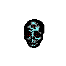

Oculte
Grande cave
layer_05
02
Où êtes-vous ?
- A : Continuer.
- B : Avancer !
- C : Attendre et voir ce qui se passe.
À un moment, il faut arrêter d’expérimenter et faire ce qui semble être les bons choix. Pourquoi toujours vouloir risquer de se briser pour avancer ? Apprendre à tomber n’est pas tomber volontairement. Peu importe, il me reste 221 489 livres à lire et trop de temps.